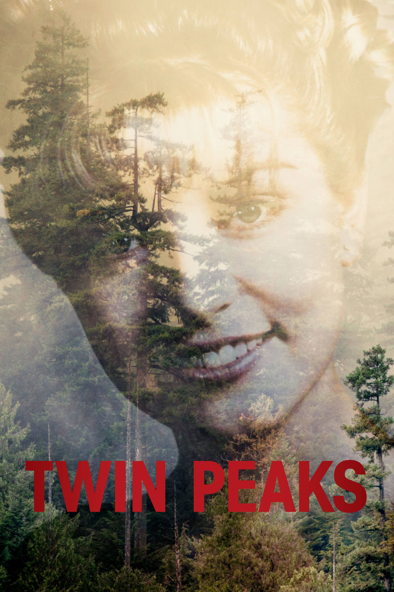

Blogged as Mark'd
Home
About Me
Biography
Blog
Blog Part 1
Blog Part 2
Blog Part 3
Photo Gallery
Myself
My Arts
MY FILMS
TV SHOW EDITION
MY FILM PROFILES:
CHECK OUT MUSIC PAGE:
FILTER BY GENRE ▾
All
Comedy
Mystery
Drama
Surrealism
Historical
Documentary
Experimental
Political
Horror
Thriller
Psychological
Animation
Postmodernism
Noir
Romance
Family
Science Fiction
Coming of Age
Slice of Life
